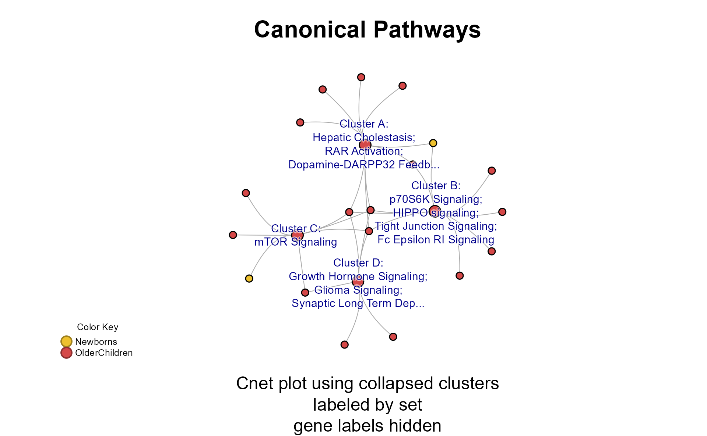
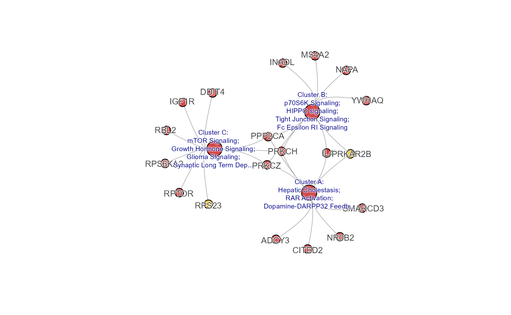
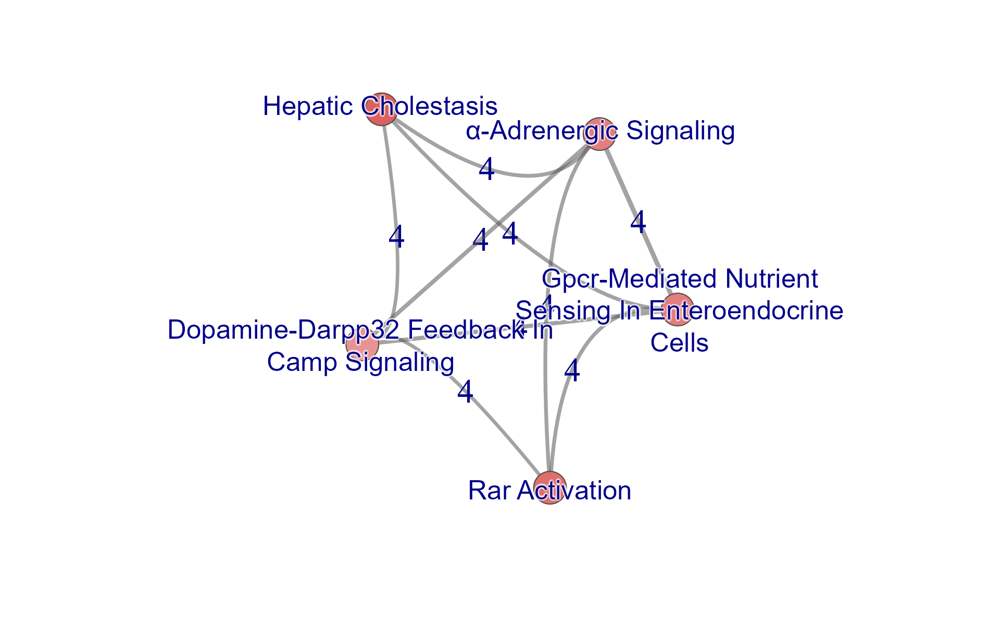
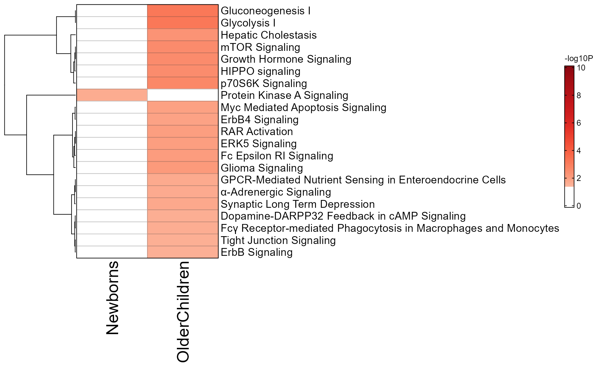
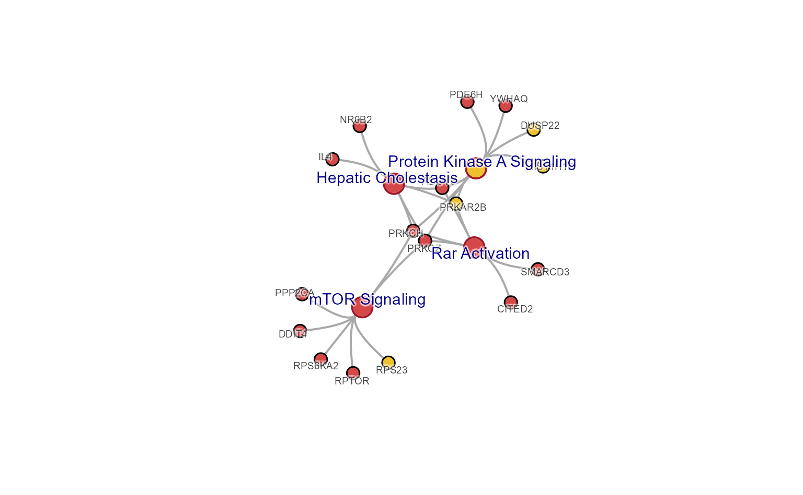
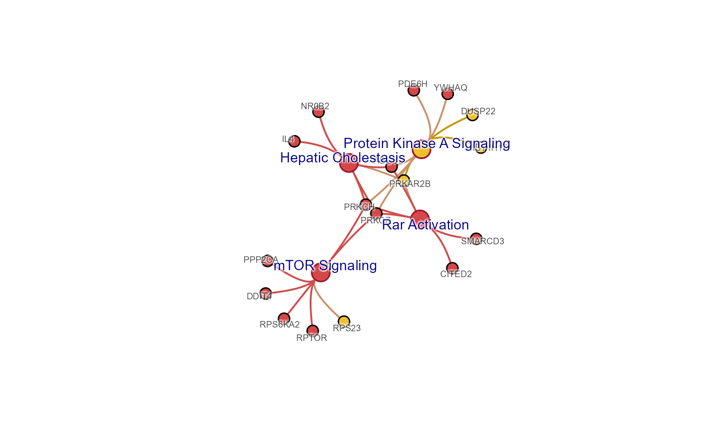

library(multienrichjam);
#>
library(jamba);
library(colorjam);
suppressPackageStartupMessages(library(ComplexHeatmap));
options("stringsAsFactors"=FALSE, "warn"=-1);Import and use Ingenuity IPA enrichment data
This document describes steps recommended for using Ingenuity IPA enrichment data.
Ingenuity IPA enrichment data can be exported using a function
"Export All" which by default creates one text file,
concatenating each enrichment table into one large file.
This workflow demonstrates the import process using two IPA enrichment files used by Reese et al 2019 https://doi.org/10.1016/j.jaci.2018.11.043 to compare enrichment results in newborns to older children.
It therefore requires IPA enrichment results have already been exported in text format from IPA.
Import IPA data from text files
To import an IPA text file, use
importIPAenrichment():
newborn_txt <- system.file("extdata",
"Newborns-IPA.txt",
package="multienrichjam");
newborn_dfl <- importIPAenrichment(newborn_txt);The result is a list of data.frame objects, where each
data.frame represents one enrichment test. A convenient way
to see the dimensions of each data.frame is with the
function jamba::sdim():
sdim(newborn_dfl);
#> rows cols class
#> Canonical Pathways 113 8 data.frame
#> Upstream Regulators 117 7 data.frame
#> Diseases and Bio Functions 444 8 data.frame
#> Tox Functions 15 8 data.frame
#> Networks 8 8 data.frame
#> Tox Lists 19 7 data.frame
#> Analysis Ready Molecules 41 3 data.frameFor MultiEnrichMap, we typically want to analyze multiple IPA
enrichment files, so we can wrap the call in an lapply()
function:
newborn_txt <- system.file("extdata",
"Newborns-IPA.txt",
package="multienrichjam");
olderchildren_txt <- system.file("extdata",
"OlderChildren-IPA.txt",
package="multienrichjam");
ipa_files <- c(Newborns=newborn_txt,
OlderChildren=olderchildren_txt)
ipa_l <- lapply(ipa_files, importIPAenrichment);Now we can check the dimensions within each list using
jamba::ssdim():
ssdim(ipa_l);
#> $Newborns
#> rows cols class
#> Canonical Pathways 113 8 data.frame
#> Upstream Regulators 117 7 data.frame
#> Diseases and Bio Functions 444 8 data.frame
#> Tox Functions 15 8 data.frame
#> Networks 8 8 data.frame
#> Tox Lists 19 7 data.frame
#> Analysis Ready Molecules 41 3 data.frame
#>
#> $OlderChildren
#> rows cols class
#> Canonical Pathways 237 8 data.frame
#> Upstream Regulators 338 8 data.frame
#> Diseases and Bio Functions 500 8 data.frame
#> Tox Functions 118 8 data.frame
#> Networks 10 8 data.frame
#> Tox Lists 36 7 data.frame
#> Analysis Ready Molecules 162 3 data.frameIn most cases, each IPA file should contain the same enrichment
tests, for example "Canonical Pathways",
"Upstream Regulators",
"Diseases and Bio Functions", etc. However, it is not
always the case, so it is recommended to check and verify each IPA file
contains at least the enrichment tests needed for downstream
analysis.
Analyze IPA enrichments from one enrichment test
IPA performs multiple enrichment tests, which are done independently and with unique assumptions and caveats. Therefore, I recommend using one enrichment test at a time in MultiEnrichMap.
Extract one data.frame from each result:
library(igraph)
#>
#> Attaching package: 'igraph'
#> The following objects are masked from 'package:stats':
#>
#> decompose, spectrum
#> The following object is masked from 'package:base':
#>
#> union
## Take only the Ingenuity Canonical Pathways
enrichList_canonical <- lapply(ipa_l, function(i){
i[["Canonical Pathways"]];
});
sdim(enrichList_canonical);
#> rows cols class
#> Newborns 113 8 data.frame
#> OlderChildren 237 8 data.frame
## Convert data.frame to enrichResult
## multienrichjam::enrichDF2enrichResult
er_canonical <- lapply(enrichList_canonical, function(i){
enrichDF2enrichResult(i,
keyColname="Name",
pvalueColname="P-value",
geneColname="geneNames",
geneRatioColname="Ratio",
pvalueCutoff=1)
});
sdim(er_canonical);
#> rows cols class
#> Newborns 113 12 enrichResult
#> OlderChildren 237 12 enrichResult
kable_coloring(
head(as.data.frame(er_canonical[[1]])),
caption="Top 10 rows of enrichment data",
row.names=FALSE) %>%
kableExtra::column_spec(column=seq_len(ncol(er_canonical[[1]])),
border_left="1px solid #DDDDDD",
extra_css="white-space: nowrap;")| ID | Ingenuity Canonical Pathways | -log(p-value) | zScore | GeneRatio | geneID | pvalue | geneNames.ipa | Description | p.adjust | Count | setSize |
|---|---|---|---|---|---|---|---|---|---|---|---|
| Role of Macrophages, Fibroblasts and Endothelial Cells in Rheumatoid Arthritis | Role of Macrophages, Fibroblasts and Endothelial Cells in Rheumatoid Arthritis | 0.405 | NaN | 0.00321 | TNFSF13B | 0.3935501 | TNFSF13B | Role of Macrophages, Fibroblasts and Endothelial Cells in Rheumatoid Arthritis | 0.3935501 | 1 | 312 |
| Neuroinflammation Signaling Pathway | Neuroinflammation Signaling Pathway | 0.406 | NaN | 0.00322 | CASP8 | 0.3926449 | CASP8 | Neuroinflammation Signaling Pathway | 0.3926449 | 1 | 311 |
| Sirtuin Signaling Pathway | Sirtuin Signaling Pathway | 0.428 | NaN | 0.00344 | HIST1H1D | 0.3732502 | HIST1H1D | Sirtuin Signaling Pathway | 0.3732502 | 1 | 291 |
| G-Protein Coupled Receptor Signaling | G-Protein Coupled Receptor Signaling | 0.447 | NaN | 0.00362 | PRKAR2B | 0.3572728 | PRKAR2B | G-Protein Coupled Receptor Signaling | 0.3572728 | 1 | 276 |
| Protein Ubiquitination Pathway | Protein Ubiquitination Pathway | 0.461 | NaN | 0.00377 | TAP2 | 0.3459394 | TAP2 | Protein Ubiquitination Pathway | 0.3459394 | 1 | 265 |
| Signaling by Rho Family GTPases | Signaling by Rho Family GTPases | 0.478 | NaN | 0.00397 | RDX | 0.3326596 | RDX | Signaling by Rho Family GTPases | 0.3326596 | 1 | 252 |
run multiEnrichMap()
Now given a list of data.frame results, we can run
multiEnrichMap():
mem_canonical <- multiEnrichMap(er_canonical,
enrichBaseline=1,
cutoffRowMinP=0.05,
topEnrichN=20)Output is a list containing summary results.
kable_coloring(
sdim(mem_canonical),
caption="sdim(mem_canonical)") %>%
kableExtra::column_spec(column=seq_len(4),
border_left="1px solid #DDDDDD",
extra_css="white-space: nowrap;")| rows | cols | class | class_v2 | |
|---|---|---|---|---|
| enrichLabels | 2 | character | NA | |
| colorV | 2 | character | NA | |
| geneHitList | 2 | list | NA | |
| geneHitIM | 68 | 2 | matrix | array |
| geneIM | 28 | 2 | matrix | array |
| geneIMcolors | 28 | 2 | matrix | array |
| enrichIMgeneCount | 21 | 2 | matrix | array |
| enrichIMdirection | 21 | 2 | matrix | array |
| enrichList | 2 | list | NA | |
| enrichIM | 21 | 2 | matrix | array |
| enrichIMcolors | 21 | 2 | matrix | array |
| multiEnrichDF | 21 | 12 | data.frame | NA |
| multiEnrichResult | 21 | 14 | enrichResult | NA |
| memIM | 28 | 21 | matrix | array |
| multiEnrichMap | 21 | 171 | igraph | NA |
| multiEnrichMap2 | 21 | 171 | igraph | NA |
| multiCnetPlot | 49 | 92 | igraph | NA |
| multiCnetPlot1 | 49 | 92 | igraph | NA |
| multiCnetPlot1b | 49 | 92 | igraph | NA |
| multiCnetPlot2 | 49 | 92 | igraph | NA |
| colnames | 9 | list | NA | |
| thresholds | 6 | list | NA | |
| p_cutoff | 1 | numeric | NA |
Mem Plot Folio
The mem_plot_folio() represents a key step in the
analysis workflow. Several downstream results are directly dependent
upon the options chosen here:
Pathway clusters are defined by analyst parameters:
- The number of pathways clusters
- The relative weight of the gene-pathway incidence matrix.
- The method used for clustering.
Mem Plot Folio then provides a series of visualizations:
Enrichment P-value heatmap often as a dot plot
Gene-pathway heatmap, clustered by column and by row
-
Cnet cluster plots
- Pathway clusters are labeled by
LETTERS(“A”, “B”, “C”, “D”, etc.) - The second plot labels clusters by the top
npathway names - The third plot is (b) and hides the gene labels.
- Pathway clusters are labeled by
-
Cnet exemplar plots
- Includes 1 exemplar pathway per cluster.
- Includes 2 exemplars per cluster.
- Includes 3 exemplars per cluster.
-
Cnet per cluster
- One plot for each pathway cluster
mem_canonical_plots <- multienrichjam::mem_plot_folio(mem_canonical,
pathway_column_split=4,
column_cex=0.7,
node_factor=1,
use_shadowText=TRUE,
label_factor=1.2,
do_which=c(1:5),
verbose=TRUE,
main="Canonical Pathways");
#> ## (13:54:28) 17Oct2025: mem_plot_folio(): Gene-pathway heatmap (pre-emptive)
#> ## (13:54:28) 17Oct2025: mem_plot_folio(): plot_num 1: Enrichment P-value Heatmap
#> ## (13:54:29) 17Oct2025: mem_plot_folio(): Gene-pathway heatmap
#> ## (13:54:29) 17Oct2025: mem_plot_folio(): plot_num 2: Gene-Pathway Heatmap
#> ## (13:54:31) 17Oct2025: mem_plot_folio(): Defined 4 pathway clusters.
#> ## (13:54:31) 17Oct2025: mem_plot_folio(): Preparing Cnet collapsed
#> ## (13:54:31) 17Oct2025: mem_plot_folio(): subsetCnetIgraph()
#> ## (13:54:31) 17Oct2025: mem_plot_folio(): plot_num 3: Cnet collapsed with gene and cluster labels
#> ## (13:54:32) 17Oct2025: mem_plot_folio(): plot_num 4: Cnet collapsed with gene and set labels
#> ## (13:54:32) 17Oct2025: mem_plot_folio(): plot_num 5: Cnet collapsed with set labels, without gene labels
The object returned mem_canonical_plots is a
list of the graphical objects.
Commentary on the “Plot Folio”
Where is Enrich Map?
In practice, we rarely find benefit from the multi-enrichment map. The network shows pathways connected to pathways based upon Jaccard overlap of the genes involved in enrichment of each pathway.
This network view was often disorganized, not clearly clustered, and lacked ability to see which genes drive the overlaps between pathways.
Perhaps it works best for the highly structured Gene Ontology (GO), but in our hands GO was just not insightful for the broad range of experiments we were analyzing.
Concept network (Cnet)
We gravitated toward the Cnet plot, a clever idea by Dr. Guangchang Yu to visualize pathways connected to genes, where genes also connect naturally to other pathways.
For many of our collaborators, this plot is visually intuitive. It also answers the next question people often have:
“What are the shared genes?”
Our subtle customization is to color genes by enrichment to show which genes are shared or unique across enrichments.
The gene nodes are sorted by color, and optionally by border, to help organize patterns.
Cnet cluster plot
The evolution of Cnet plots led to two conceptual ideas, both driven by the “too many pathways†problem:
-
Cnet using “exemplar pathways”
- This option is not comprehensive, as it only shows a subset of pathways.
- This option will not show every gene involved in enrichment.
- Its main utility is to produce a clean figure. Ultimately, this is also a core goal of multienrichjam.
- This option is ideal when there are relevant pathways known to be relevant to the experiment, and when Option 2 (below) is too complex.
- Option 1 is the path chosen by the
ggtanglecomponent of theclusterProfilersuite by Dr. Yu. It displays the top N pathways, with defaultshowCategory=5. In our experience, the “top N†are not always the most representative, nor the most interesting. So we extended multienrichjam accordingly.
-
Cnet using pathway clusters
- This option is intended to be more comprehensive, less complex than plotting 20 pathways individually, but more complex than “Cnet exemplars†above.
- This option will show every gene involved in enrichment.
- This option is the main utility of multienrichjam.
- Pathways are clustered based upon the genes they contain. The approach is similar to Enrichment Map (Bader lab) use of Jaccard overlap. However, clustering is a rich field with many important techniques not captured by a simple overlap coefficient.
Option 2 has several important benefits
-
Reduces redundancy among pathways.
- When the genes involved in pathway enrichment are identical across several pathways, they naturally cluster together.
- Over much time, we observed that gene-pathway clustering provides a rich overview of the data involved, and gives insight into the underlying pathways and supporting data.
-
Avoids clustering by P-value
- To be frank, our original approach was to plot the P-value matrix of test versus pathway. As a heatmap, it naturally provides clusters, and it sometimes fortuitously appears biologically relevant.
- We learned that clustering by P-value is incorrect. Instead, we recommend using the underlying gene content of the pathways. The purpose is to group pathways conceptually, and enrichment P-value is not an indication of biology.
-
Provides functional sub-groups for interpretation.
- Ideally, nearly identical pathways are grouped together and are “easily summarized†by a scientist.
- More often, pathway clusters contain similar pathways, grouped because they also share “core genes†across these pathways.
- This is an exciting finding in itself, and turns out to be the major step forward in interpreting pathway enrichment findings. Unfortunately, it doesn’t provide an “easy summary†to use as a label.
Cnet Cluster Plot
The Cnet Cluster Plot is often the focus of manuscript figures. The typical workflow is demonstrated below.
# generate the data
mpf4 <- mem_plot_folio(mem_canonical,
do_which=c(4),
do_plot=FALSE)
# extract the cnet
cnet <- mpf4$cnet_collapsed_set;
# jam_graph
jam_igraph(cnet,
node_factor=2,
use_shadowText=TRUE,
label_factor_l=list(nodeType=c(Gene=2, Set=1)))
ShinyCat
The R-shiny Cnet Adjustment Tool ShinyCat.
There are several functions to help customize a Cnet
igraph object, however these are more easily applied by
launch_shinycat().
Make sure to assign the output to a variable, or to click “Save RData†from within the R-shiny app.
output_env <- launch_shinycat(g=cnet)
# obtain the output data
adj_cnet <- output_env$adj_cnet;
# jam_graph
jam_igraph(adj_cnet,
node_factor=2,
use_shadowText=TRUE,
label_factor_l=list(nodeType=c(Gene=2, Set=1)))Multi-Enrichment Map
We can view the “Multi Enrichment Map†itself with
mem_multienrichplot().
This network connects pathways when they meet a Jaccard overlap
coefficient threshold based upon the shared genes between the pathways.
The default overlap is stored by multiEnrichMap() in the
output object mem_canonical.
g <- mem_multienrichplot(mem_canonical,
do_plot=FALSE,
overlap=0.3,
node_factor=2,
repulse=3.5)
jam_igraph(g,
node_factor=2,
use_shadowText=TRUE)
title(main="overlap=0.3")
You can provide the Jaccard overlap threshold directly, with argument
overlap. Values should be between 0 and 1.
The threshold can be estimated by mem_find_overlap(),
based upon network connectivity.
use_overlap <- mem_find_overlap(mem_canonical);
g <- mem_multienrichplot(mem_canonical,
overlap=use_overlap,
do_plot=FALSE,
node_factor=3,
repulse=3.5)
jam_igraph(g,
node_factor=3,
use_shadowText=TRUE)
title(main=paste0("overlap=", use_overlap))
Notice there are distinct subnetworks, called “components”, which are not connected to each other.
You can pull out a component with
subset_igraph_components(). Components are ordered by size,
largest to smallest, so you can keep the largest using argument
keep=1, or the second largest with keep=2, and
so on.
We also call two other helper functions:
-
- removes blank colors from multi-color nodes, such as pie nodes, or colored rectangle nodes.
- It helps show only the remaining colors without the whitespace.
-
- Fruchterman-Reingold layout, with argument
repulseused to adjust the spacing between nodes. - Also updates other useful attributes, and spreads the node labels to reduce label overlaps.
- Fruchterman-Reingold layout, with argument
## You can alternatively pull out any other component
g_sub <- subset_igraph_components(g, keep=1);
## Re-apply network layout, and remove blank colors
g_sub <- relayout_with_qfr(repulse=3.5,
removeIgraphBlanks(g_sub))
## Plot
jam_igraph(g_sub,
node_factor=3,
label_factor=2,
use_shadowText=TRUE)
Enrichment P-value Heatmap
mem_enrichment_heatmap() produces a heatmap with
Enrichment versus pathway, with -log10(P-value) in the heatmap.
It is also provided by:mem_plot_folio(mem, do_which=1)
Argument p_cutoff is used to set the Pvalue, by default
it inherits the same threshold from the data provided. Cells are only
shaded with the P-value is below the threshold, making it clear which
entries are significant. below which cells are colorized – every P-value
above this threshold is not colored, and displayed as white, even when
the P-value is less than 1.
mem_enrichment_heatmap(mem_canonical,
p_cutoff=0.05);
The same data can be plotted as a heatmap.
mem_enrichment_heatmap(mem_canonical,
style="heatmap",
p_cutoff=0.05);
Argument color_by_column=TRUE applies the color gradient
to each column, using colorV colors defined in from
multiEnrichMap().
memhm <- mem_enrichment_heatmap(mem_canonical,
style="heatmap",
color_by_column=TRUE);
Gene-Pathway Heatmap
We can view the pathway-gene matrix using the function
mem_gene_path_heatmap() produces a heatmap of the
pathway-gene incidence matrix. This heatmap is the core of
multienrichjam.
It is also provided by:mem_plot_folio(mem, do_which=2)
The function will estimate the number of pathway clusters, but can be customized:
-
column_split=3will produce 3 pathway clusters. -
row_split=10will produce 10 gene clusters.
Colors across the top of the heatmap indicate enrichment P-values.
Colors on the left of the heatmap indicate which genes were present in each enrichment test. When directional gene hits are provided, the left of the heatmap will also indicate directionality.
hm <- mem_gene_path_heatmap(mem_canonical,
column_cex=0.5,
row_cex=0.6);
ComplexHeatmap::draw(hm,
merge_legends=TRUE)
As a follow-up analysis, you can pull out each pathway cluster from
the heatmap itself, using heatmap_column_order():
hm_sets <- heatmap_column_order(hm);
hm_sets;
#> $A
#> Glioma Signaling Synaptic Long Term Depression
#> "Glioma Signaling" "Synaptic Long Term Depression"
#> Growth Hormone Signaling mTOR Signaling
#> "Growth Hormone Signaling" "mTOR Signaling"
#> Fc Epsilon RI Signaling p70S6K Signaling
#> "Fc Epsilon RI Signaling" "p70S6K Signaling"
#>
#> $B
#> Hepatic Cholestasis
#> "Hepatic Cholestasis"
#> RAR Activation
#> "RAR Activation"
#> Dopamine-DARPP32 Feedback in cAMP Signaling
#> "Dopamine-DARPP32 Feedback in cAMP Signaling"
#>
#> $C
#> Tight Junction Signaling HIPPO signaling
#> "Tight Junction Signaling" "HIPPO signaling"Full Cnet plot
The Concept network (Cnet) plot shows every pathway-gene relationship.
The helper function memIM2cnet() creates a Cnet plot
from the mem_canonical output. Here, we also pipe the
result through other helper functions:
-
fixSetLabels()applies pathway label word wrap -
relayout_with_qfr()applies network layout and adjusts node labels -
removeIgraphBlanks()removes blank colors from theigraphnodes
#cnet <- mem_canonical$multiCnetPlot1b;
cnet <- mem_canonical %>%
memIM2cnet() %>%
fixSetLabels() %>%
removeIgraphBlanks() %>%
relayout_with_qfr(repulse=4);
withr::with_par(list(mar=c(5,4,4,2)+0.1), {
jam_igraph(cnet,
use_shadowText=TRUE,
node_factor=0.5,
vertex.label.cex=0.6);
mem_legend(mem_canonical);
})
Extract the largest connected subnetwork.
g2 <- cnet;
g2_sub <- subset_igraph_components(cnet, keep=1)
#plot(g2_sub);
jam_igraph(g2_sub,
use_shadowText=TRUE,
label_factor=0.5,
node_factor=0.5);
Subset Cnet by Cluster
Subset the pathway nodes with subsetCnetIgraph(), using
hm_sets defined above.
cnet_sub <- subsetCnetIgraph(cnet,
repulse=3.5,
includeSets=unlist(hm_sets[c("A")]));
jam_igraph(cnet_sub,
node_factor=1,
use_shadowText=TRUE,
label_dist_factor=3,
label_factor=1.3);
mem_legend(mem_canonical);Subset Cnet Options
Subset the pathway nodes with subsetCnetIgraph(), using
a custom subset of pathways.
Alternatively, subset by other network attributes:
-
minSetDegree=6: pathways with at least 6 genes -
minGeneDegree=2: genes present in 2 or more pathways (not used here).
Other useful defaults:
-
remove_singlets=TRUE: remove singlet nodes with no connections. -
force_relayout=TRUE: re-calculated the layout. -
do_reorder=TRUE: re-order nodes by color. -
spread_labels=TRUE: re-position labels away from incoming edges -
remove_blanks=FALSE: optionally remove blank colors from pie nodes.
cnet3 <- multienrichjam::subsetCnetIgraph(cnet,
repulse=5,
minSetDegree=6,
minGeneDegree=1);
jam_igraph(cnet3,
node_factor=0.7,
use_shadowText=TRUE);
mem_legend(mem_canonical);
jam_igraph() for igraph plots
jam_igraph() is a customized
igraph::plot(), with benefits:
edge_bundling="connections"(default) improves the rendering of edges by bundling edges from node clusters, so they are drawn with a bezier curveuse_shadowText=TRUE(optional) will draw labels with a contrasting border to improve legibility of text labelsrescale=FALSE(default) keeps the network layout aspect ratio instead of scaling the coordinates to fit the size. of the plot window. It also properly scales the node and edge sizes.-
convenient resizing:
-
label_factor: adjustslabel.cexby a multiplier -
node_factor: adjustsnode.sizeby a multiplier -
edge_factor: adjustsedge.widthby a multiplier -
label_dist_factorre-scales thelabel.distvalues by a multiplier
-
Simple resizing
Consider the following changes, demonstrated below:
-
node_factor=2: nodes 2x larger -
edge_factor=2: edges 2x wider -
label_factor=1.2: labels 20% larger -
use_shadowText=TRUE: shadow text labels -
label_dist_factor=5: label distance 5x farther from node center
jam_igraph(cnet3,
node_factor=2,
edge_factor=2,
label_factor=1.2,
label_dist_factor=5,
use_shadowText=TRUE)
Colored edges
Colorize edges based upon the node colors, inspired by the Gephi netowrk visualization tool.
jam_igraph(color_edges_by_nodes(cnet3, alpha=0.7),
edge_bundling="connections",
edge_factor=2,
node_factor=2,
label_factor=1.2,
label_dist_factor=5,
use_shadowText=TRUE)